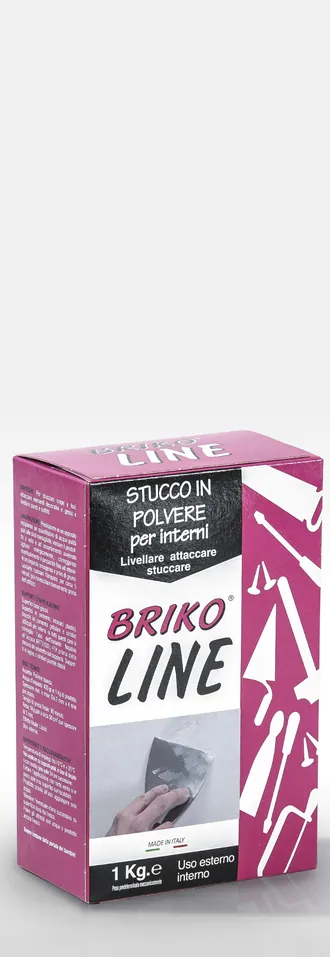
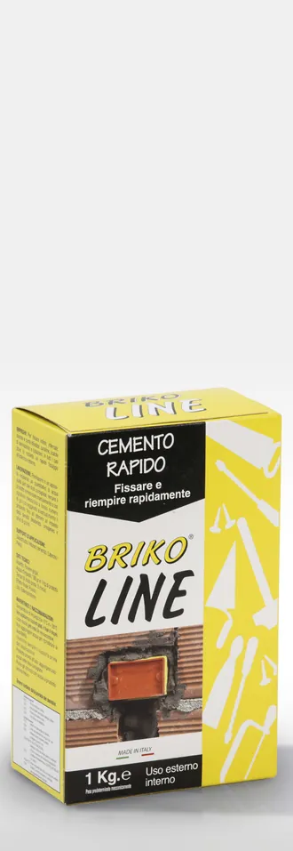
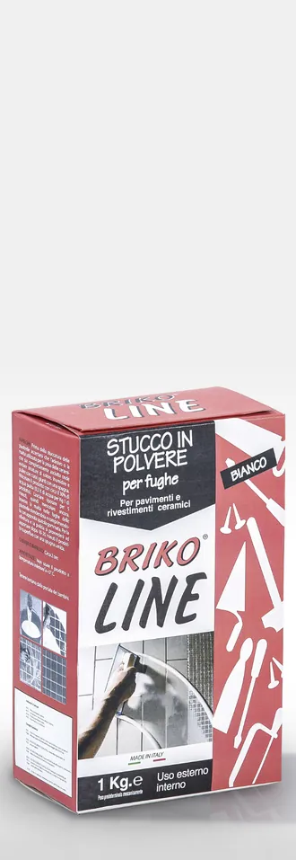
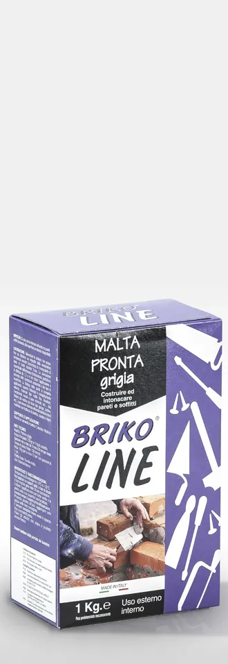
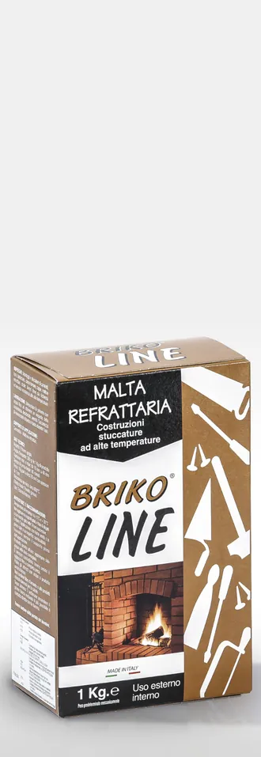
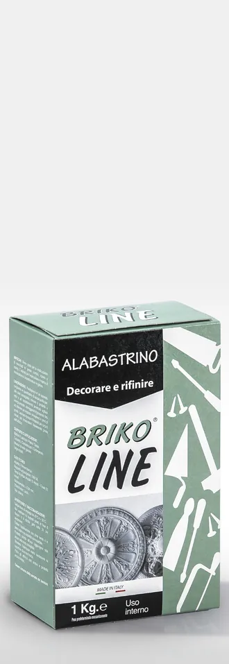
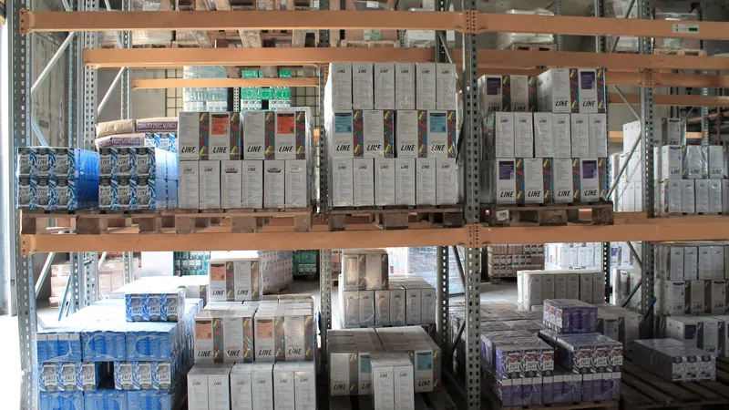

Crepe e buchi 
Fissaggi 
Fughe 
Muri 
Caminetti 
Calchi
Stucchi, gessi e malte da Tombelle di Saonara
Cosa devi fare?
Scrivi il lavoro, il nome sulla scatola o il codice.
Le altre scatole da 1 kg:
Quattro linee, 96 prodotti
La scatola da 1 kg per la crepa di casa, il sacco da 25 kg per il cantiere. Codici e confezioni come sulle schede; il listino prezzi è su richiesta.
- Briko Line43 prodotti per il fai da te: scatole da 1 kg, secchielli da 750 g, confezioni da 5 kgCodici e schede →
- Artelinea41 prodotti per il professionista, in confezioni da 5, 10 e 25 kg e in secchiCodici e schede →
- Gli specialiStucchi e rasanti per grossi spessori, intonaco di finitura, malta risananteCodici e schede →
- Altri prodottiMastice per vetri, rete autoadesiva, isolante al solvente, segatura, secchielliCodici e schede →
Apri l'elenco dei codiciChiudi l'elenco
| Prodotto | Codice e confezione | Schede (PDF) |
|---|---|---|
| Briko Line 43 prodotti | ||
| Additivo per malte | 4230010 1 l x 16 pz, bancale 512 pz | Tecnica Sicurezza |
| Brikoll per parquettes | 4437507 750 g x 12 pz | Tecnica Sicurezza |
| Brikoll per piastrelle | 4433507 750 g x 12 pz | Tecnica Sicurezza |
| Brikoll per polistirolo | 4434507 750 g x 12 pz | Tecnica Sicurezza |
| Calce idrata | 4310030 3 kg x 5 pz, bancale 450 kg | Tecnica Sicurezza |
| Calce idraulica | 4349050 5 kg x 4 pz, bancale 720 kg | Tecnica Sicurezza |
| Cemento bianco | 4304050 5 kg x 4 pz, bancale 720 kg 4304010 1 kg x 12 pz, bancale 720 kg | Tecnica Sicurezza |
| Cemento grigio | 4305050 5 kg x 4 pz, bancale 720 kg 4305010 1 kg x 12 pz, bancale 720 kg | Tecnica Sicurezza |
| Cemento rapido | 4307050 5 kg x 4 pz, bancale 720 kg 4307010 1 kg x 12 pz, bancale 720 kg | Tecnica Sicurezza |
| Colla per piastrelle bianca | 2308250 25 kg 2308100 10 kg 2308050 5 kg | Tecnica Sicurezza |
| Colla per piastrelle grigia | 2386250 25 kg 2386100 10 kg 2386050 5 kg | Tecnica Sicurezza |
| Colla universale | 4427507 750 g x 12 pz, bancale 768 pz | Tecnica Sicurezza |
| Gesso alabastrino | 4362050 5 kg x 4 pz, bancale 720 kg 4362010 1 kg x 12 pz, bancale 720 kg | Tecnica Sicurezza |
| Gesso bologna | 4342006 600 g x 6 pz | Tecnica Sicurezza |
| Gesso murario | 4302050 5 kg x 4 pz, bancale 720 kg 4302010 1 kg x 12 pz, bancale 720 kg | Tecnica Sicurezza |
| Gesso scagliola | 4301050 5 kg x 4 pz, bancale 720 kg 4301010 1 kg x 12 pz, bancale 720 kg | Tecnica Sicurezza |
| Gomma impermeabilizzante | 4426507 750 g x 12 pz, bancale 768 pz 2420240 24 kg, bancale 30 pz 2420080 8 kg, bancale 80 pz | Tecnica Sicurezza |
| Intonaco adesivo bianco | 4466507 750 g x 12 pz, bancale 768 pz | Tecnica Sicurezza |
| Intonaco adesivo grigio | 4419507 750 g x 12 pz, bancale 768 pz | Tecnica Sicurezza |
| Isolante Antimuffa | 4296010 1 l x 12 pz, bancale 504 pz | Tecnica Sicurezza |
| Isolante fissativo all'acqua | 4220010 1 l x 12 pz, bancale 504 pz | Tecnica Sicurezza |
| Malta bianca | 4348050 5 kg x 4 pz, bancale 720 kg 4348010 1 kg x 12 pz, bancale 720 kg | Tecnica Sicurezza |
| Malta grigia | 4306050 5 kg x 4 pz, bancale 720 kg 4306010 1 kg x 12 pz, bancale 720 kg | Tecnica Sicurezza |
| Malta refrattaria | 4308050 5 kg x 4 pz, bancale 720 kg 4308010 1 kg x 12 pz, bancale 720 kg | Tecnica Sicurezza |
| Malta refrattaria in pasta | 4418010 1 kg x 12 pz, bancale 768 pz | Tecnica Sicurezza |
| Mordente mogano | 4345005 confezione: chiedere al 049 879 0626 | Tecnica Sicurezza |
| Mordente noce | 4344005 confezione: chiedere al 049 879 0626 | Tecnica Sicurezza |
| Ossido di ferro blu | 4339005 500 g x 6 pz | Tecnica Sicurezza |
| Ossido di ferro bruno | 4324005 500 g x 6 pz | Tecnica Sicurezza |
| Ossido di ferro giallo | 4322005 500 g x 6 pz | Tecnica Sicurezza |
| Ossido di ferro nero | 4325005 500 g x 6 pz | Tecnica Sicurezza |
| Ossido di ferro rosso | 4323005 500 g x 6 pz | Tecnica Sicurezza |
| Ossido di ferro verde | 4338005 500 g x 6 pz | Tecnica Sicurezza |
| Polvere ceramica bianca | 4312050 confezione: chiedere al 049 879 0626 4312010 5 kg x 4 pz, bancale 720 kg | Tecnica Sicurezza |
| Polvere ceramica terracotta | 4313050 confezione: chiedere al 049 879 0626 4313010 5 kg x 4 pz, bancale 720 kg | Tecnica Sicurezza |
| Sabbia | 4311050 5 kg x 4 pz, bancale 720 kg | Tecnica Sicurezza |
| Schiuma poliuretanica | 4554502 250 ml | Tecnica Sicurezza |
| Stucco in pasta bianco | 4428050 5 kg, singole, bancale 750 kg 4428010 1 kg x 12 pz, bancale 768 kg 4428005 500 g x 24 pz, bancale 660 kg 4428502 250 g x 24 pz, bancale 648 kg | Tecnica Sicurezza |
| Stucco in pasta colorato | 4429050 5 kg, singole, bancale 750 kg 4429010 1 kg x 6 pz, bancale 768 kg 4429005 0,5 kg x 12 pz, bancale 660 kg 4429502 250 g x 12 pz, bancale 648 kg | Tecnica Sicurezza |
| Stucco in pasta leggero bianco | 4458010 1 l x 6 pz 4458005 0,5 l x 12 pz 4458502 0,25 l x 24 pz | Tecnica Sicurezza |
| Stucco in polvere interno | 4303050 5 kg x 4 pz, bancale 720 kg 4303010 1 kg x 12 pz, bancale 720 kg | Tecnica Sicurezza |
| Stucco per fughe piastrelle bianco | 4317050 5 kg x 4 pz, bancale 720 kg 4317010 1 kg x 12 pz, bancale 720 kg | Tecnica Sicurezza |
| Stucco per fughe piastrelle grigio | 4384050 5 kg x 4 pz, bancale 720 kg 4384010 1 kg x 12 pz, bancale 720 kg | Tecnica Sicurezza |
| Gli speciali 6 prodotti | ||
| Intonaco di finitura cementizio liscio bianco | 2380100 10 kg 4350050 5 kg 4350010 1 kg | Tecnica Sicurezza |
| Malta risanante idrorepellente | Codice non indicato nella scheda | Tecnica Sicurezza |
| Rasante cementizio finitura ruvida bianco | 2375100 10 kg 4375050 5 kg 4375010 1 kg | Tecnica Sicurezza |
| Rasante cementizio finitura ruvida grigio | 2376100 10 kg 4376050 5 kg 4376010 1 kg | Tecnica Sicurezza |
| Stucco cementizio grossi spessori grigio | 2374100 10 kg 4374050 5 kg 4374010 1 kg | Tecnica Sicurezza |
| Stucco in polvere grossi spessori bianco | 2385100 10 kg 4315050 5 kg 4315010 1 kg | Tecnica Sicurezza |
| Artelinea 41 prodotti | ||
| Artecoll AA 102 | 2429050 5 kg | Tecnica Sicurezza |
| Artecoll AL 107 | 2432050 5 kg | Tecnica Sicurezza |
| Artecoll AP 103 | 2430050 5 kg | Tecnica Sicurezza |
| Artecoll APA 101 | 2422100 10 kg 2422050 5 kg | Tecnica Sicurezza |
| Artecoll AV 104 | Codice non indicato nella scheda | Tecnica Sicurezza |
| Arteisol-fix all'acqua | 2223100 10 l 2223050 5 l | Tecnica Sicurezza |
| Artestucco L60 bianco | 2458030 2,5 kg 2458010 1 kg | Tecnica Sicurezza |
| Artestucco L60 grigio | 2440030 2,5 kg 2440010 1 kg | Tecnica Sicurezza |
| Artestucco TXR15 | 2333250 25 kg 2333050 5 kg | Tecnica Sicurezza |
| Calce idrata | 2314250 15 kg | Tecnica Sicurezza |
| Calce idraulica | 2336250 25 kg 2336050 5 kg | Tecnica Sicurezza |
| Cemento bianco | 2310250 25 kg 2310100 10 kg 2310050 5 kg 2310010 1 kg | Tecnica Sicurezza |
| Cemento grigio | 4305050 5 kg x 4 pz, bancale 720 kg 4305010 1 kg x 12 pz, bancale 720 kg | Tecnica Sicurezza |
| Cemento rapido | 2309250 25 kg 2309100 10 kg 2309050 5 kg 2309010 1 kg | Tecnica Sicurezza |
| Cemento refrattario | 2339050 5 kg | Tecnica Sicurezza |
| Colla per piastrelle bianca | 2308250 25 kg 2308100 10 kg 2308050 5 kg | Tecnica Sicurezza |
| Colla per piastrelle grigia | 2386250 25 kg 2386100 10 kg 2386050 5 kg | Tecnica Sicurezza |
| Gesso alabastrino | 2305250 25 kg | Tecnica Sicurezza |
| Gesso bologna | 2312250 25 g | Tecnica Sicurezza |
| Gesso murario | 2303250 25 kg 2303100 10 kg 2303050 5 kg | Tecnica Sicurezza |
| Gesso scagliola | 2304250 25 kg 2304100 10 kg 2304050 5 kg 2304010 1 kg | Tecnica Sicurezza |
| Gomma impermeabilizzante | 2420240 24 kg 2420080 8 kg | Tecnica Sicurezza |
| Malta bianca | 2338300 30 kg 2338100 10 kg 2338050 5 kg | Tecnica Sicurezza |
| Malta grigia | 2307250 25 kg 2307100 10 kg 2307050 5 kg | Tecnica Sicurezza |
| Malta refrattaria | 2311050 5 kg | Tecnica Sicurezza |
| Polvere ceramica bianca | 2319250 25 kg | Tecnica Sicurezza |
| Sabbia | 2315250 25 kg 2315100 10 kg 2315050 5 kg | Tecnica Sicurezza |
| Solfato di calcio | 2318500 27 kg | Tecnica Sicurezza |
| Stucco in pasta Artestuccoll V90 bianco | 2466250 25 kg 2446100 10 kg 2446050 5 kg | Tecnica Sicurezza |
| Stucco in pasta Artestuccoll V90 grigio | 2421250 25 kg 2421100 10 kg 2421050 5 kg | Tecnica Sicurezza |
| Stucco in pasta CV180 bianco | 2416250 25 kg 2416050 5 kg 2416010 1 kg 2416005 0,5 kg | Tecnica Sicurezza |
| Stucco in pasta CV180 colorato | 2417050 5 kg 2417010 1 kg 2417005 0,5 kg | Tecnica Sicurezza |
| Stucco in polvere BC30 | 2360200 20 kg 2360050 5 kg | Tecnica Sicurezza |
| Stucco in polvere E180 | 2357250 25 kg 2357100 10 kg 2357050 5 kg | Tecnica Sicurezza |
| Stucco in polvere N120 | 2301250 25 kg 2301100 10 kg 2301050 5 kg 2301025 2,5 kg 2301010 1 kg | Tecnica Sicurezza |
| Stucco in polvere S60 | 2302250 25 kg 2302100 10 kg 2302050 5 kg | Tecnica Sicurezza |
| Stucco per esterno C120 bianco | 2350250 25 kg 2350100 10 kg 2350050 5 kg | Tecnica Sicurezza |
| Stucco per esterno C120 grigio | 2313250 25 kg 2313100 10 kg 2313050 5 kg | Tecnica Sicurezza |
| Stucco per esterno L90 bianco liscio | 2334200 20 kg 2334100 10 kg 2334050 5 kg | Tecnica Sicurezza |
| Stucco per fughe piastrelle bianco | 2387100 10 kg 2387050 5 kg | Sicurezza |
| Stucco per fughe piastrelle grigio | 2388100 10 kg 2388050 5 kg | Tecnica Sicurezza |
| Altri prodotti 6 prodotti | ||
| Isolante fissativo al solvente | 4221010 0,75 l 2224050 5 l | Nessun PDF sul sito |
| Mastice per vetri | 4463050 5 kg 446310 1 kg 4464010 1 kg 4465050 5 kg | Nessun PDF sul sito |
| Rete autoadesiva | 4556002 20 m x 24 pz 4556002 20 m x 60 pz 4556009 90 m | Nessun PDF sul sito |
| Secchielli anonimi bianchi | Codice non indicato nella scheda | Nessun PDF sul sito |
| Segatura ecologica | 2377250 sacco da 25 l | Nessun PDF sul sito |
| Stucco in pasta grasso sintetico | 4459010 500 ml 4459005 250 ml | Nessun PDF sul sito |

Hai un negozio? Ordina per codice
Ferramenta, colorifici, agrarie, brico, empori e rivendite edili: le scatole Briko Line da 1 kg si ordinano in confezioni da 12 pezzi e a bancali.
- Trova il codiceNella ricerca o nell'elenco dei codici, che si scarica anche in PDF.
- Chiama o scriviAgli ordini o a info@narditalia.com con codici e quantità.
- Tieni le schede di sicurezzaSono nell'elenco e in ogni risultato della ricerca; per le domande, sicurezza@narditalia.com.
Dove si compra Briko Line
Nelle ferramenta, nei colorifici, nelle agrarie, nei vivai, nei brico e negli empori. Chiedila al tuo negozio con il nome o il codice scritto sulla scatola. Non la trovi? Chiama gli ordini.
La vendono, tra gli altri, Polato Ferramenta a Monselice (PD), Emporium La Cometa a Castel d'Ario (MN), Santilli Vivai a Celano (AQ), Ferramenta Stella a Vietri sul Mare (SA) e Brico 5 Stelle in provincia di Caserta.
Sacchi, buste e schede tecniche
Artelinea è la linea per muratori, piastrellisti, stuccatori e decoratori. Ogni scheda tecnica ha i campi di impiego, le forniture con i codici e le caratteristiche tecniche.
Per quantità e consegna chiama gli ordini.
Dichiarazione di prestazione n. 1 - E180 - 2017
- Prodotto
- Artestucco E180, stucco in polvere
- Norma
- UNI EN 13279-1
- Reazione al fuoco
- Classe A1
Prodotti per l'edilizia professionale e il fai da te
La ditta Nardi nasce nel 1985 con Benito Nardi, che crea stucchi artistici decorativi in gesso. Per posarli comincia a produrre da sé lo stucco: è il primo passo nel mondo delle polveri. Con i macchinari per i vari formati la gamma diventa quella di oggi.
Dal 2011 un impianto fotovoltaico dà energia alla produzione. Sulle confezioni Briko Line c'è scritto Made in Italy, e la facciata è dipinta come la scatola.
Ordini, domande e richieste
- Ordini
- 049 879 0626
fax 049 830 4579 - Orari
Dal lunedì al venerdì
Lunedì-venerdì 8-12 e 14-18 Sabato e domenica chiuso - info@narditalia.com per ordini e listino
sicurezza@narditalia.com per le schede di sicurezza - Sede
- Via S. Antonio, 24/a, 35020 Tombelle di Saonara (PD)
Apri la sede nel navigatore